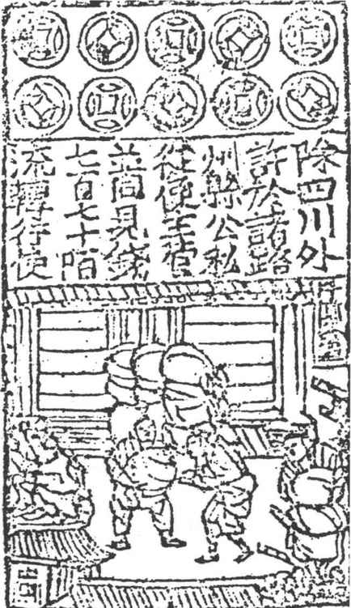
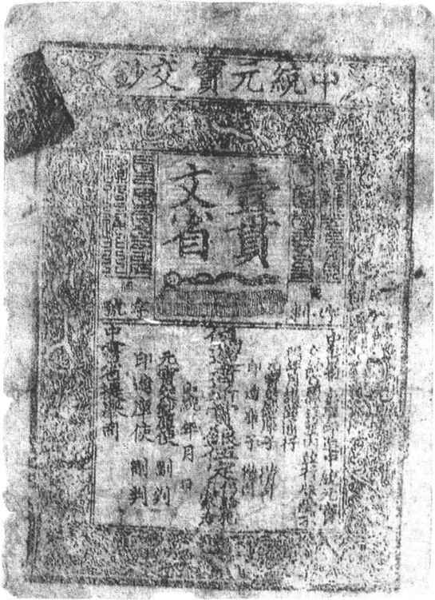
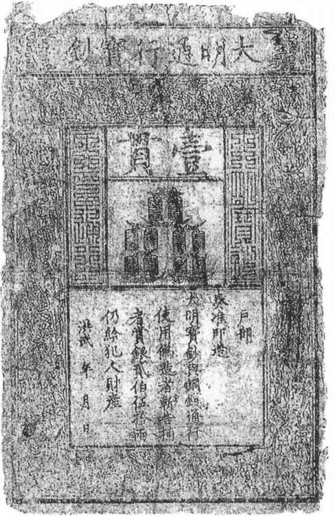
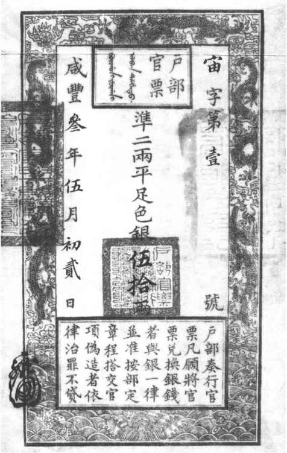

钞币是古代的纸币，它本身没有价值，是代表一定价值的符号，是在信用关系比较发达的情况下为社会所公认的一种流通手段和支付手段。钞币的出现，表明我国货币已发展到较先进的阶段。
中国是世界上使用纸币最早的国家。据说，纸币的雏形，早在西周时期就已出现，叫做“里布”。春秋战国时，又有“皮币”、“傅别”。汉武帝时有“白鹿皮币”。唐朝有“飞钱”、“便换”。五代十国时有长沙的“契券”。严格地讲，这些都还不能算是真正的纸币，但是它们对钞币的产生有着重大的影响。
我国最早的纸币，是北宋初年的“交子”。宋、金、元、明、清各朝都发行了多种类型、名称各异的纸币，由于其中叫“宝钞”、“钞券”名称的使用年代最长，所以一些钱币学家把古代的纸币通称为“钞币”，［73］以便和现代纸币相区别。钞币的流通到清咸丰官票宝钞消亡为止，大约有八百七八十年。以后近代银行券兴起，中国纸币的发展即进入了另一新的阶段。
中国钞币的发展，如果从其性质来看，基本上可分为：兑现的钞币和不兑现的钞币两类。
早期的钞币，都是以兑换券形式出现的，凭券随时可以换取现钱或现银，所以是兑现的钞币。这种纸币，在宋、金和元初流通使用，大约有三百余年。
最初的钞币产生于四川。北宋开国前后，四川流通行使的是铁钱。铁钱个体重价值小，买卖交易用钱量大。大铁钱每千枚重25斤，小铁钱每十贯重65斤。买一匹绢，需用两万多个小铁钱，重量共达130斤，得用车载驴驮，极为不便。于是在淳化、至道年间（990—997），出现了交子。“蜀民以铁钱重，私为券，谓之交子，以便贸易”。［74］交子的“交”是交换的意思，指凭券即可交钱，所以是兑换券性质。由于交子随时能兑现，因而它可以代替现钱在市场流通。
最初的交子，是一张两面都有出票人印记的收据式的票券，上面有密码花押，朱墨间错。票面金额临时填写。交子初创时，是由一些大商号分别签发的，又叫做私交子。后来成都16家富商联合建立交子铺，统一负责交子的发行工作。印制交子，改用统一的纸张，图案花纹用铜版印刷。（图15—18）向交子铺收票人交付现钱，即可领到交子。兑现时，每贯收取手续费30文。交子比铁钱具有很大的优越性，简便易行，极受人们欢迎，但也常被举办交子的商户利用来赚钱。宋仁宗时，北宋政府设置益州交子务，取缔私交子，发行官交子，官交子有几种不同的面额，形制为长方形，桑皮纸印刷。考虑到纸币容易磨损，字迹模糊，采取分界（分期）发行的办法，三年为一界，界满以旧换新。每界发行限额为一百二十五万余缗（每缗千文），以四川铁钱为钞本（发行准备金）。流通范围限于四川、陕西。宋徽宗崇宁四年（1105）实行币制改革，交子改称钱引，全国通行。钱引是领钱的证书，也就是兑换券的意思，又叫钞引。钞引的印刷很有特色，币面有文字、图案花纹，还有人物图画，黑、青、红三色套印，用铜版分六次印刷，是很好的艺术品。钱引的印刷，是我国多色印刷术的鼻祖，在世界印刷史上也享有很高的声誉。

图15-18 北宋官交子或钱引版
在交子和钱引流通的同时，各地区还产生了关子和会子。它们起初也是民间发行的，后改为官办。会子盛行于东南各地，南宋时最流行。会子和钱引一样，也是三色套印，精美程度稍差。钱引的金额是临时填写的，会子则把面额、发行机关等印在上面，分为一贯、五百文、三百文、二百文几种。上半部还印有严禁伪造等法律规定。
金朝受南宋的影响，海陵王贞元二年（1154），设交钞库，发行交钞，与铜钱并行流通。交钞是交子和钞引的合称，形制基本上仿自交子和钱引，长方形，四周画云鹤图案，钞面有文字说明，并有对伪造、捕告的惩赏条例。［75］交子以铜钱为单位，分大、小钞各五等（即一、三、五、十贯及一、二、三、五、七百文），以七年为期，到期以旧换新。后因通货膨胀改为无限期。泰和七年（1207）金政府曾发布《钞法条例》，制定了有关交钞的管理规定。［76］由于金政府军费开支过大，交钞从1189年起通货膨胀，尽管一再更换新钞，先后改名为宝券、通宝、珍货、重宝、宝会等等，但币值越换越小，信用越来越低，直至经济全面崩溃。
元朝是古代纸币最盛行时期，市场上除银元宝外，几乎都是纸币。成吉思汗时期，曾发行过会子和交钞。元世祖中统元年（1260）发行“中统元宝交钞”，以白银为本位，面额仍沿用铜钱单位，从十文到二贯分为十等，每二贯同白银一两。当时不限地区，不限年月行使。这些纸币初时还都是兑现的，但中统钞因发行量过大，不久即宣布不再兑现、强制永久通行，从此结束了兑现钞币时代。
三百年来兑现纸币的发行，较大地方便了工商贸易和民间支付，促进了当时商品生产，受到商民百姓的欢迎。但是，纸币发行权收归官营以后，又不可避免地被政府利用来收掠民间财货，弥补财政开支。因此，无论哪一种纸币，在开始正常行使流通了一阵之后，都毫无例外地出现了大规模超量发行，从而引起通货膨胀和物价上涨。例如，“界”本来是宋代钞币的重要特征，是为保证兑现和控制发行量的措施。实际上，宋政府并未认真遵守这个规定，也没真正按定额发行。两界并行或一界展期的事时有发生。大观六年（1107），交子发行量一界超过天圣年间的20倍。到南宋绍定五年（1232）两界会子发行三亿二千九百多万贯，为立界之初定额的33倍。显然，界的限制作用已经消失。淳祐七年（1247），南宋政府终于取消了会子的界分，永远通用。［77］最突出的是金朝的交钞恶性膨胀。金朝初起时，军事上四面出击，发了战争财，上下骄奢靡费。后来四面受敌，军费开支太大，财政极端困难，就滥发纸币。金世宗大定二十九年（1189）以后，取消七年期的限制，不限发行数量，不管兑现，不备钞本，并且不断发行新钞，扩大交钞面额。金宣宗贞祐二年（1214）在已经严重通货膨胀的情况下，发行面额二百贯到一千贯的大钞，结果币值跌成千分之一，一贯钞币实际只值一文钱。百姓的资财受通货膨胀影响瞬间即化为乌有，当时称做“坐化”。贞祐三年又发行新币“贞祐宝券”。一年后，宝券又跌到每贯只值几文钱。贞祐五年再发行新币“贞祐通宝”，一贯当宝券一千贯，再跌成千分之一。至兴定五年（1221），银价已上涨四十多万倍，元光二年（1223）银价已涨到六千万倍。后来元初的耶律楚材说，当时“万贯唯易一饼”。金朝末年，民间已公然拒绝用钞，许多商人罢市，远逃他乡。
不兑现钞币，是靠政府行政权力强制通行的纸币，已成为纯粹的价值符号，表明我国纸币发展已进入一个新阶段。我国古代不兑现钞币，从元代中统钞开始，历经明、清两代，行使流通大约五百余年。
元中统四年开始限制白银流通，至元十四年（1277）禁止江南行用铜钱，至元二十年禁止民间买卖金银，至元二十二年拘收全国铜钱，通过这一系列措施，使中统元宝交钞成为全国唯一的法偿货币，开创了不兑现的纸币时代。（图15—19）在中统钞流通的同时，至元二十四年发行“至元通行宝钞”。面额从五文到一贯、二贯共十一种。以后中统钞发行缩小，至元钞成为主要纸币。至元钞流通期间，武宗至大三年（1310）曾发行“至大银钞”，正式规定银钞与白银的联系，面额以银两计算，自二两至二厘共为十三等级。至大银钞一两，等于至元钞五贯。此币未及一年即废止。顺帝至正十年（1350），发行新的“中统元宝交钞”，叫至正交钞。新钞一贯合铜钱一千文或至元钞二贯。元代纸币形体较大，长方形，有蒙、汉两种文字，版别很多，书法各异，其他如图案花纹、印押等，都和宋、金钞币差不多。元代钞币的发行和流通制度比较完备，至元十九年（1282）中书省颁发《整治钞法条划》，至元二十四年尚书省颁行的《至元宝钞通行条划》，这是我国最早的较完整的两个纸币法规。中央政府成立诸路宝钞都提举司，设行用库和平准行用库，控制发行量和倒换昏钞（破烂票）。管理制度的完善，使元代成为钞币发展的高峰时期。意大利人马可·波罗来到中国，见小小一张纸片竟可以买到各种各样的商品，大为惊叹。他说：“大汗国中，商人所至之处，用此纸币以给赏用、以购商物、以取其货物之售价，竟与纯金无别”，简直是中国皇帝的“点金术”［78］

图15-19 中统元宝交钞
明代只发行了大明通行宝钞一种钞币。（图15—20）洪武八年（1375），设立宝钞提举司，立钞法，发行大明通行宝钞。它的形制基本仿照元钞，花纹结构、款式格局都差不多，桑皮纸印刷。面额按铜钱从一百文到一贯共分六种。一贯的宝钞，长一尺，宽六寸，是我国最大的钞币。允许与铜钱混合流通，但政府发钞不兑现钱。每钞一贯，折钱一千文，银一两；钞四贯准黄金一两。明代钞法，沿用元制，不限地区和流通时间，不定发行限额，没有发行准备金。宝钞的印制和发行都集中于中央政府。为了推行宝钞，曾实行“户口钞盐法”（每户成人配盐一斤，收钞一贯）、“门摊课程”（店铺商人用钞交纳门摊课），强制商民用钞，但收效甚微。弘治年间（1488—1505）宝钞已无人使用。

图15-20 大明通行宝钞
清代政府发行的钞币有两种。顺治八年到十八年（1651—1661），因军费支出浩大，财政入不敷出，发行“钞贯”。形制仿明宝钞，面额从十文到一贯。每年发行限额十二万八千余贯。后因战事减少，经济好转，钞贯发行即停止。咸丰三年（1853）因镇压太平天国战争，财政困难，发行“户部官票”和“大清宝钞”。户部官票又叫银票，以银两为单位，分一两、三两、五两、十两、五十两等多种面额。（图15—21）形制似大明宝钞而略小，桑皮纸印刷。大清宝钞，又叫钱票、钱钞。以制钱为单位，面额有二百五十文到二千文等八种。后为了收回当千、当百大铜钱，面额膨胀到五千文、十千文、百千文（即十万文）等多种大额钱钞。同治元年（1862），政府决定税款停收钞票，至此官票、宝钞不再流通使用。清代除政府发行的钞币外，民间还有钱庄、票号、典当以及大的商号等发行的钱票、银票等钞币同时流通。这是属于定期付现的本票性质的票券。一般是银票面额大些，计算单位是两和钱，钱票面额小些，计算单位是文和吊（或串）。各地的名称也有所不同，如山西有凭帖、兑帖、上帖、壶瓶帖、期帖等。

图15-21 请咸丰三年户五十两银票
元、明、清三代的不兑现钞币，都是在战乱年代或财政困难的情况下发行的，凭借皇权威势以行政方式强迫商民百姓行用。实际是一张无价值的纸片，无偿地征收民间财物来弥补政府财政的不足。明朝的货币政策，规定政府支付俸给、军饷都用宝钞发出，而租税却不收宝钞，光投放不回笼，或多投放少回笼，利用大明宝钞搜刮人民财富的手段尤为露骨。由于发钞有利可图，促使政府漫无限制地滥发，从而通货膨胀一直伴随钞币流通而共始终。如元代钞法虽较完善，但执行得非常混乱，任意扩大发行，使钞币到处充斥市场。初发钞时中统元年，中统钞发行量为七万三千余锭，到至元二十四年，发行额已增至五百零九万余锭，增长220倍，物价也上涨数十倍。到至大三年发行至大银钞一百四十五万锭，合中统钞三千六百余万锭，比中统初增长1253倍。物价随之大涨，如米价元顺帝至正末比忽必烈中统初上涨六七倍。贿赂官吏，所需钞币要用车载。［79］明代的大明宝钞从一开始就处于通货膨胀的阴影之下，币值不断下跌，到洪武二十七年（1394），大明宝钞一贯实际只值一百六十文钱。正统九年（1444）宝钞一贯只值十文钱。弘治元年（1488年），宝钞一贯值钱一文，实际上这时民间已不用钞了。嘉靖初年（1522），规定入库只用银不用宝钞，即等于正式宣布宝钞作废。清咸丰钱票最初的三四个月就发行了一百几十万串。人们拿到钱票却换不回现钱，所以大家重私票（私人钱庄的钱票）轻官钞（大清宝钞），钞价大跌。咸丰四年（1854）宝钞一千文值四五百文钱，咸丰五年官票一两和宝钞一千文，只值制钱一二百文。许多省份，拒不行用。外国商人则乘机压价收购钞币，按规定的五成用钞币去缴关税，逃避负担。因此，钞币已成为政府之累赘。到咸丰十一年（1861），官票早已绝迹，宝钞一千文只值二十六文铜钱。
货币是历史性的范畴。中国古代货币及其制度，是在中国社会经济发展中不断地前进的，是我国古代文化遗产中的瑰宝。在中国古代货币的历史长卷中，展现了中国古代货币经济发展繁荣兴旺的景象，也显示了封建制度后期货币经济停滞及种种矛盾问题。所有这一切，都可以给我们研究和处理当代的货币问题以有益的启示。
［1］ 《易·系辞下》。
［2］ 《淮南子·齐俗训》。
［3］ 《史记·平准书》。
［4］ 《管子·国蓄篇》。
［5］ 《管子·山权数篇》。
［6］ 《盐铁论·错币第四》。
［7］ 《河南偃师二里头遗址发掘简报》，《考古》1965年第5期。
［8］ 据碳14法测定，河南地区龙山文化的年代，约为公元前2800—前2300年。
［9］ 《铁104.4，武丁卜辞》，陈梦家《殷墟卜辞综述》，中华书局，2004。
［10］ 《甲777，康丁卜辞》，陈梦家《殷墟卜辞综述》。
［11］ 郭沫若《安阳圆坑墓中鼎铭考释》，《考古学报》1960年第1期。
［12］ 《安阳殷墟五号墓的发掘》，《考古学报》1977年第2期。
［13］ 《山东益都苏埠屯第一号奴隶殉葬墓》，《文物》1972年第8期。
［14］ 郭沫若《殷周青铜器铭文研究》，科学出版社，1961。
［15］ 珧贝，用蚌类磨制的贝币。
［16］ 《诗经·小雅·菁菁者莪》。
［17］ 《陕西省岐山县董家村西周铜器窖穴发掘简报》，《文物》1976年第5期。
［18］ 马德志《1953年安阳发掘报告》；吴振录《保德县新发现的殷代青铜器》，《文物》1972年第4期。
［19］ 郭沫若《两周金文辞大系图录考释》，科学出版社，1957。
［20］ 同上。
［21］ 郭沫若《两周金文辞大系图录考释》。
［22］ 经裘锡圭、艾俊川、周卫荣等考证，先秦的铲形铸币，自东汉末郑玄对《周礼》误注为“布币”后，以讹传讹，虽有历代名家指出其错误，但未受到多数人重视，相沿袭了一千多年，因此认为“布币”应改称“铲币”。（参见2002年出版的中国钱币学会编《中国钱币论文集》第四辑，第6—37页）但考虑到这一见解目前仍有不同的争议，故本文仍称做“布币”。
［23］ 《汉书·食货志上》。
［24］ 《韩非子·外储说左上》。
［25］ 《荀子·富国》。
［26］ 《史记·货殖列传》。
［27］ 郭宝钧《山彪镇与琉璃阁》，科学出版社，1959。
［28］ 《史记·货殖列传》。
［29］ 《睡虎地秦墓竹简·秦律十八种》，文物出版社，1978。
［30］ 《史记·孙叔敖列传》。
［31］ 《国语·周语下第三》。
［32］ 《管子·山至数》。
［33］ 鲁褒《钱神论》，见《全晋文》卷一一三。
［34］ 王献唐《中国古代货币通考》，齐鲁书社，1979。
［35］ 《史记·平准书》。
［36］ 上林三官，汉代官制。水衡都尉居上林苑内，属官有钟官、技巧、辨铜三令，专管铸钱。
［37］ 《汉书·食货志》。
［38］ 肉好，为古代表述铜钱钱体各部分的术语，肉指铜钱的金属部分，好指铜钱中间的孔。
［39］ 高至喜《长沙衡阳西汉墓发现铁半两钱》，《文物》1963年第11期。
［40］ 千家驹、郭彦岗《中国货币史纲要》，上海人民出版社，1986。
［41］ 《汉书·王莽传》。
［42］ 《史记·平准书》。
［43］ 《管子·国蓄篇》。
［44］ 《汉书·食货志》。
［45］ 《战国策·韩策三》。
［46］ 赵翼《二十二史札记》，“汉多黄金”条。
［47］ 钣，指板片状金属。
［48］ 《湖北江陵三座楚墓中出土大批文物》，《文物》1966年第5期。
［49］ 涂书田《安徽省寿县出土的大批楚金币》，《文物》1980年第10期。
［50］ 《管子·轻重甲》。
［51］ 《管子·乘马篇》。
［52］ 关于古代用黄金数量为何如此之大，可参考《二十二史札记》“汉多黄金”条，其中有：“后世黄金日少，金价亦日贵，盖由中土产金之地已发掘净尽；而自佛教入中国后，塑像涂金……此最为耗金之蠹”云云。
［53］ 《汉书·食货志》。
［54］ 安志敏《金钣与金饼》表二：1949年后发现的金饼登记表，《考古学报》1973年第2期。
［55］ 褭，是古代的一种良马。
［56］ 沈括《梦溪笔谈》卷二一。
［57］ 《九章算术》卷六。
［58］ 《九章算术》卷七。
［59］ 《后汉书·冯异传》。
［60］ 王嘉《拾遗记》卷六。
［61］ 《资治通鉴》卷二二六。
［62］ 《文物》1982年第6期。
［63］ 《河南扶沟古城村出土楚国金银币》，《文物》1980年第10期。
［64］ 《河北省平山县战国时期中山国墓葬发掘报告》，《文物》1979年第1期。
［65］ 《资治通鉴》卷一八七胡三省注。
［66］ 《续资治通鉴长编》卷九七。
［67］ 《建炎以来朝野杂记》甲集卷一四《财赋》。
［68］ 《建炎以来朝野杂记》甲集卷一七《财赋四·左藏库》。
［69］ 《文物参考资料》1957年第4期，文物出版社。
［70］ 任昉《述异记》卷下，《汉魏丛书》本。
［71］ 《册府元龟》卷五〇一《邦计部·钱币第三》。
［72］ 《唐会要》卷八九《泉货》，清武真殿聚珍版丛书本。
［73］ 罗振玉《四朝钞币图录》。
［74］ 李焘《续资治通鉴长编》卷一〇一。
［75］ 《金史·食货志》。
［76］ 《中国古钞图录》。
［77］ 《宋史·食货志下》。
［78］ 马承钧译《马可波罗行纪》第95章，中华书局，1954。
［79］ 彭信威《中国货币史》，上海人民出版社，1958，第405—412页。